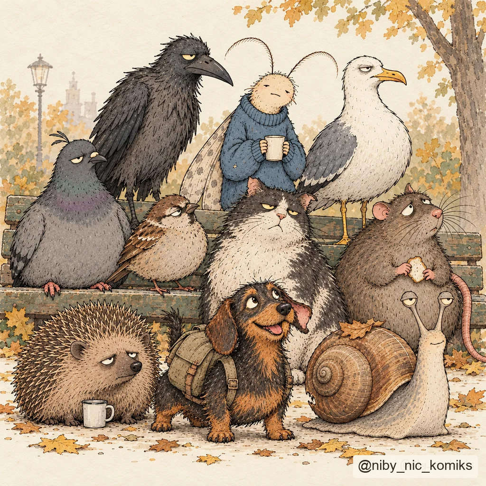

ZWYCZAJNY DZIEŃ. NIEZWYCZAJNA EKIPA.
Niby nic.
A jednak
coś w tym jest.
Małe sprawy, wielkie rozkminy.
I ktoś, kto po prostu usiądzie obok.
Podoba ci się tutaj?
Możesz postawić autorowi kawę ↗
Dobrze, że jesteś.

Życie, w dość doborowym towarzystwie.NA CHWILĘ ZATRZYMANIA
Może znasz
to uczucie.
Historie krótkie jak przerwa na kawę.
Niektóre zostają trochę dłużej.
Nie zawsze jest puenta.
Czasem jest „też tak mam”.
Niby Nic to krótkie komiksy o codzienności. O tym, co nas męczy, śmieszy i nie daje zasnąć. O małych gestach i byciu obok.
W rolach głównych: ekipa, która też nie ma wszystkiego poukładanego.
W rolach głównych: ekipa, która też nie ma wszystkiego poukładanego.
KAŻDY MA SWOJE
Poznaj ekipę.
Przesuń i poznaj pozostałych. Każdy jest trochę inny. ↔
DOBRZE MIEĆ CIĘ OBOK
Mała kawa.
Kolejna historia.
Jeśli któryś komiks poprawił ci dzień albo powiedział coś za ciebie, możesz postawić autorowi kawę. To miły gest, który pomaga tworzyć dalej.
Postaw kawę ↗Link do wsparcia pojawi się wkrótce.
Bez presji. Samo to, że czytasz, też dużo znaczy.DOBRE HISTORIE ZACZYNAJĄ SIĘ OD ROZMOWY
Masz pomysł na historię
lub nową postać?
A może chcesz stworzyć coś razem? Napisz. Poznajmy twój pomysł i zobaczmy, co z niego wyrośnie.
Do zobaczenia
przy następnym kadrze.